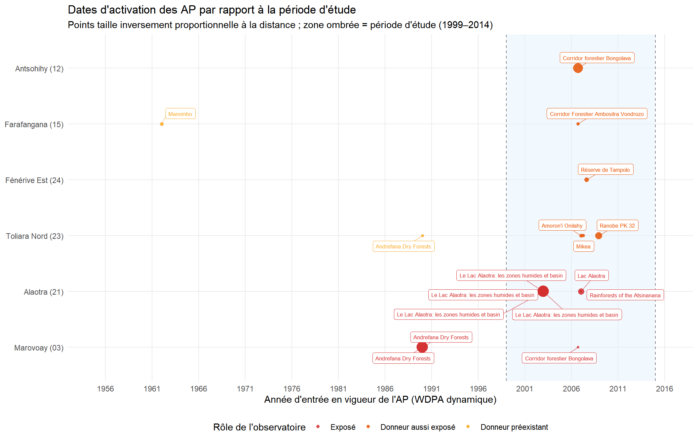
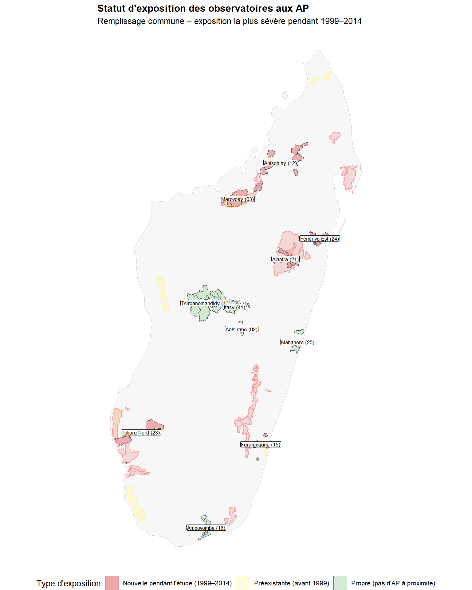
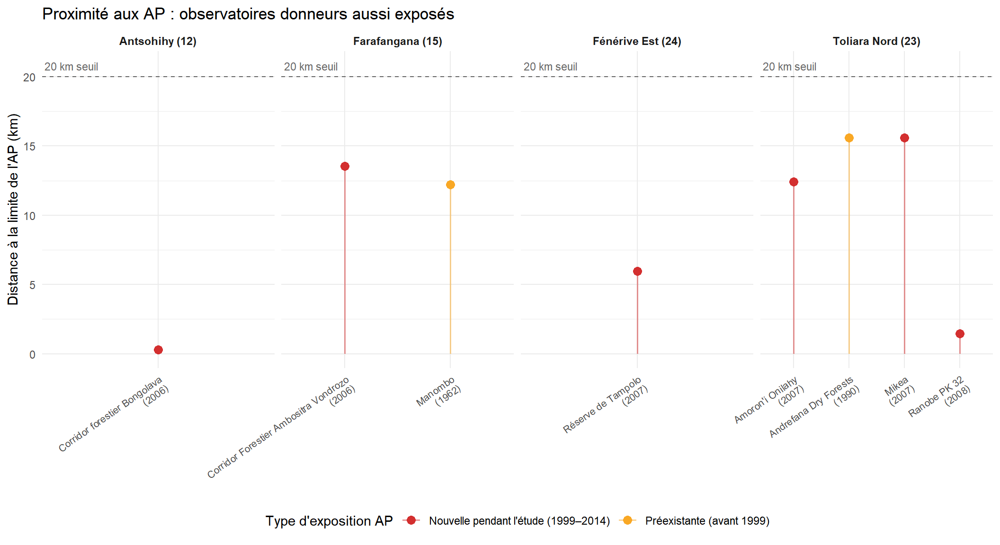
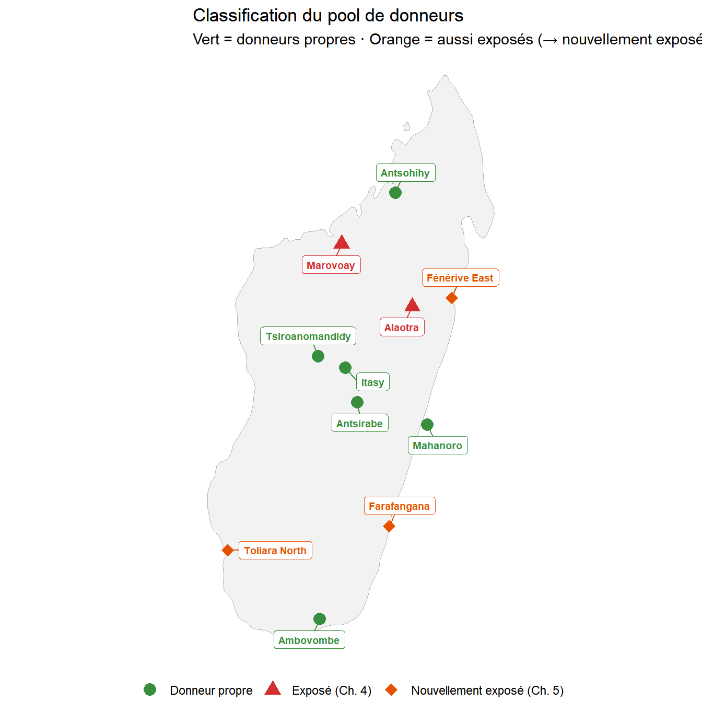

Annexe B — Validité du pool de donneurs
Audit spatial des observatoires de contrôle
Dans cette étude, neuf observatoires ont d’abord été envisagés comme donneurs candidats. Parmi eux, six sont retenus comme donneurs purs pour l’analyse principale (Chapitre 4) : ils ne doivent pas être adjacents à des aires protégées ayant fait l’objet d’une application active pendant la période d’étude 1999–2014. Cette hypothèse est plausible par construction — les observatoires SOR ont été choisis pour le suivi agricole, non pour leur proximité aux AP — mais requiert une vérification systématique. Cette annexe fournit un audit spatial des neuf candidats.
C Insuffisance des limites statiques des AP
Les bases de données standard des AP — notamment le WDPA actuel et la base Vahatra — enregistrent la limite et désignation les plus récentes de chaque aire protégée. Elles ne rendent pas compte de :
- Modifications des limites : de nombreuses AP malgaches ont été significativement étendues ou réorganisées entre 1999 et 2015.
- Décrets de protection provisoires : l’expansion SAPM post-2003 a créé des AP d’abord via des décrets provisoires avant la désignation formelle.
-
Précision des dates : de nombreuses AP dans le WDPA statique portent des valeurs
STATUS_YRincorrectes ou manquantes.
D Construction du WDPA dynamique
Nous utilisons le WDPA dynamique pour Madagascar (dynamic_wdpa.rds), une base de données temporellement explicite qui corrige et étend le WDPA standard avec des états historiques dérivés de textes juridiques, de plusieurs jeux de données institutionnels et de dates de décrets géoréférencées. Chaque enregistrement porte une plage de dates de validité (valid-from / valid-to), permettant de reconstruire quelles limites d’AP étaient légalement en vigueur à tout moment.
E Analyse de proximité
E.1 Méthode
Les localisations des observatoires sont représentées par les centroïdes des polygones communaux de Observatories_ROS_communes_COD_v4.gpkg. Le WDPA dynamique est filtré sur les limites extérieures actives pendant 1999–2014, puis uni par WDPAID. Les deux couches sont projetées en UTM 38S pour le calcul des distances.
Pour chaque paire (centroïde de commune, limite d’AP), nous calculons la distance centroïde-limite en km. Toutes les paires à moins de 20 km sont retenues et classées selon le timing d’exposition :
- Préexistante : AP active avant 1999 avec des limites inchangées tout au long.
- Nouvelle pendant l’étude : AP entrée en vigueur entre 1999 et 2014.
- Post-étude : AP créée après 2014.
| Proximité observatoire–AP | ||||||
| Toutes les paires dans 20 km · WDPA dynamique (fenêtre 1999–2014) | ||||||
| Observatoire | Rôle | Commune la plus proche | Dist. (km) | Nom de l'AP | Active depuis | Type d'exposition |
|---|---|---|---|---|---|---|
| Marovoay (03) | Exposé | Marovoay | 0.0 | Ankarafantsika | 12/31/1927 | Préexistante (avant 1999) |
| Marovoay (03) | Exposé | Tsararano | 0.0 | Ankarafantsika | 12/31/1927 | Préexistante (avant 1999) |
| Marovoay (03) | Exposé | Marovoay | 0.0 | Andrefana Dry Forests | 1/1/1990 | Préexistante (avant 1999) |
| Marovoay (03) | Exposé | Tsararano | 0.0 | Andrefana Dry Forests | 1/1/1990 | Préexistante (avant 1999) |
| Marovoay (03) | Exposé | Ankazomborona | 18.3 | Corridor forestier Bongolava | 9/15/2006 | Nouvelle pendant l'étude (1999–2014) |
| Antsohihy (12) | Pool de donneurs | Tsarahasina | 0.3 | Corridor forestier Bongolava | 9/15/2006 | Nouvelle pendant l'étude (1999–2014) |
| Farafangana (15) | Pool de donneurs | Vohitromby | 12.2 | Manombo | 1/1/1962 | Préexistante (avant 1999) |
| Farafangana (15) | Pool de donneurs | Mahatsinjo | 13.5 | Corridor Forestier Ambositra Vondrozo | 9/15/2006 | Nouvelle pendant l'étude (1999–2014) |
| Alaotra (21) | Exposé | Amparafaravola | 0.0 | Le Lac Alaotra: les zones humides et basin | 1/1/2003 | Nouvelle pendant l'étude (1999–2014) |
| Alaotra (21) | Exposé | Morarano Chrome | 0.0 | Le Lac Alaotra: les zones humides et basin | 1/1/2003 | Nouvelle pendant l'étude (1999–2014) |
| Alaotra (21) | Exposé | Ambatondrazaka Suburbaine | 0.0 | Le Lac Alaotra: les zones humides et basin | 1/1/2003 | Nouvelle pendant l'étude (1999–2014) |
| Alaotra (21) | Exposé | Ilafy | 0.0 | Le Lac Alaotra: les zones humides et basin | 1/1/2003 | Nouvelle pendant l'étude (1999–2014) |
| Alaotra (21) | Exposé | Amparafaravola | 2.4 | Lac Alaotra | 1/8/2007 | Nouvelle pendant l'étude (1999–2014) |
| Alaotra (21) | Exposé | Feramanga Nord | 17.8 | Rainforests of the Atsinanana | 1/1/2007 | Nouvelle pendant l'étude (1999–2014) |
| Toliara Nord (23) | Pool de donneurs | Miary Ambohibola | 1.4 | Ranobe PK 32 | 12/2/2008 | Nouvelle pendant l'étude (1999–2014) |
| Toliara Nord (23) | Pool de donneurs | Miary Ambohibola | 12.4 | Amoron'i Onilahy | 1/17/2007 | Nouvelle pendant l'étude (1999–2014) |
| Toliara Nord (23) | Pool de donneurs | Ankililoaka | 15.6 | Mikea | 4/13/2007 | Nouvelle pendant l'étude (1999–2014) |
| Toliara Nord (23) | Pool de donneurs | Ankililoaka | 15.6 | Andrefana Dry Forests | 1/1/1990 | Préexistante (avant 1999) |
| Fénérive Est (24) | Pool de donneurs | Ampasina Maningory | 6.0 | Réserve de Tampolo | 8/20/2007 | Nouvelle pendant l'étude (1999–2014) |
F Résultats
F.1 Classification de l’exposition
Les neuf observatoires donneurs se répartissent en trois catégories :
Propres (aucune AP dans un rayon de 20 km pendant la période d’étude, ou enquête terminée avant la création de l’AP) :
- Antsirabe (02)
- Antsohihy (12) — à 0,3 km du Corridor forestier Bongolava (UICN V, 15 septembre 2006), mais l’enquête ne couvre que 1999–2004 et se termine avant la création de l’AP. Toutes les données d’Antsohihy sont pré-traitement ; le risque de contamination est sans objet.
- Tsiroanomandidy (13)
- Ambovombe (16)
- Mahanoro (25)
- Itasy (41)
Aussi exposés (nouvelle AP dans un rayon de 20 km pendant la période d’étude, avec données post-traitement) : - Farafangana (15) — à 14 km du Corridor Forestier Ambositra-Vondrozo (UICN V, 15 septembre 2006), et avec une exposition préexistante à Manombo SR (UICN IV, 1962). L’exposition préexistante est absorbée par l’effet fixe d’unité ; le décret CFAV de 2006 représente une nouvelle exposition. - Toliara Nord (23) — à 1,4 km de Ranobe PK 32 (décembre 2008), 12 km d’Amoron’i Onilahy (janvier 2007) et 16 km du PN des Mikea (avril 2007). Le cas le plus problématique : une cascade de trois AP à partir de janvier 2007. - Fénérive Est (24) — à 6 km de la Réserve de Tampolo (UICN IV, août 2007). Petite réserve à faible intensité d’application, mais la proximité est claire.
| Pool de donneurs : statut d’exposition aux AP | |||||
| Basé sur un seuil de 20 km et les états temporels du WDPA dynamique | |||||
| Observatoire | Statut d'exposition AP | # AP dans 20 km | AP la plus proche (km) | AP la plus proche | AP active depuis |
|---|---|---|---|---|---|
| Antsohihy (12) | Aussi exposé | 1 | 0.3 | Corridor forestier Bongolava | 9/15/2006 |
| Farafangana (15) | Aussi exposé | 2 | 12.2 | Manombo | 1/1/1962 |
| Toliara Nord (23) | Aussi exposé | 4 | 1.4 | Ranobe PK 32 | 12/2/2008 |
| Fénérive Est (24) | Aussi exposé | 1 | 6.0 | Réserve de Tampolo | 8/20/2007 |
| Antsirabe (02) | Propre | 0 | NA | — | NA |
| Tsiroanomandidy (13) | Propre | 0 | NA | — | NA |
| Ambovombe (16) | Propre | 0 | NA | — | NA |
| Mahanoro (25) | Propre | 0 | NA | — | NA |
| Itasy (41) | Propre | 0 | NA | — | NA |

F.2 Profils d’exposition détaillés

G Implications
G.1 Pour l’analyse principale
L’audit de contamination a deux conséquences :
Pool de donneurs restreint : en retirant les trois observatoires aussi exposés (Farafangana, Toliara Nord, Fénérive Est), il reste six donneurs propres (Antsirabe, Antsohihy, Tsiroanomandidy, Ambovombe, Mahanoro, Itasy). Antsohihy est inclus car son enquête précède le corridor de Bongolava (2006), ne fournissant que des observations pré-traitement. La spécification principale des Chapitres 4 et 5 utilise déjà ce pool restreint de six donneurs purs ; les trois observatoires aussi exposés sont reclassifiés comme unités exposées au Chapitre 5.
Validité pré-traitement préservée pour Marovoay : le début de l’exposition (2003) précède tous les événements secondaires d’AP (le plus tôt : 2006). Les tests d’équilibre pré-traitement (ATT placebo avant 2003) ne sont pas affectés par l’exposition post-2006 des donneurs.
G.2 Pour l’analyse étendue
Les trois donneurs aussi exposés (Farafangana, Toliara Nord et Fénérive Est) deviennent des unités exposées dans l’analyse étendue (Chapitre 5). Antsohihy est reclassifié en donneur propre plutôt qu’en unité aussi exposée : son enquête couvre 1999–2004 et se termine avant l’établissement du corridor de Bongolava (septembre 2006), de sorte qu’il ne contribue qu’à des observations pré-traitement. Comme les autres donneurs propres à panel court (obs 13 se termine en 2005, obs 16 en 2008), gsynth utilise les années disponibles. La reclassification de ces trois donneurs en unités exposées :
- Purifie le pool de donneurs (en supprimant les unités aussi exposées).
- Enrichit l’échantillon exposé (cinq paires observatoire–AP au lieu de deux).
- Permet une comparaison plus large des types de gouvernance de la conservation.
